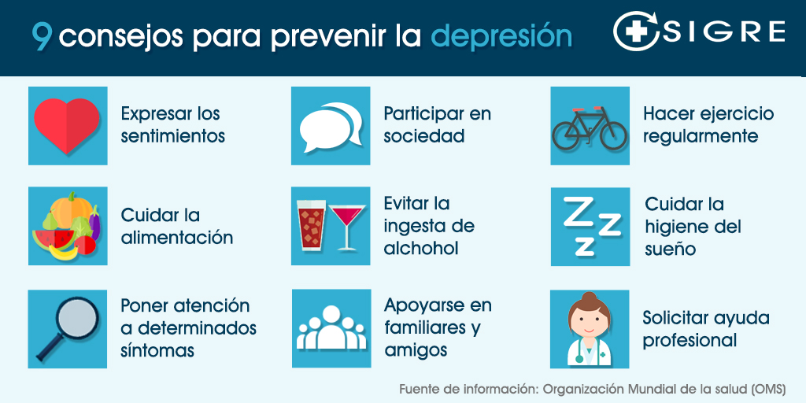
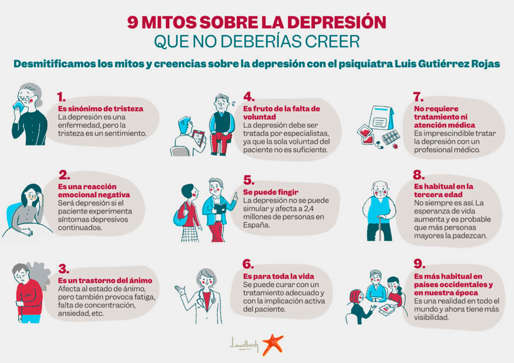
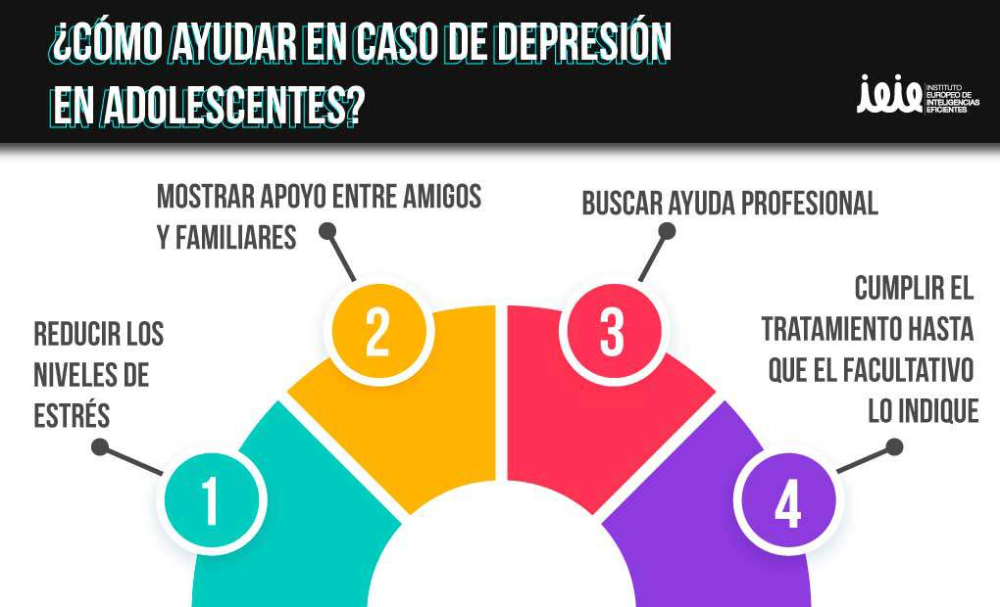

¿Qué causa la depresión en adolescentes?
Muchos factores pueden jugar un papel en la depresión, incluyendo:
- Genética: La depresión puede darse en familias.
- Biología cerebral y química
- Hormonas: Los cambios hormonales pueden contribuir a la depresión
- Eventos estresantes en la niñez como traumas, muerte de un ser querido, intimidación y ciberacoso; y abuso
¿Quiénes están en riesgo de depresión adolescente?
La depresión puede ocurrir a cualquier edad, pero a menudo comienza en la adolescencia o al comienzo de la adultez. Ciertos adolescentes tienen un mayor riesgo de depresión, como quienes:

9 consejos para prevenir la depresion

9 mitos sobre la depresion
